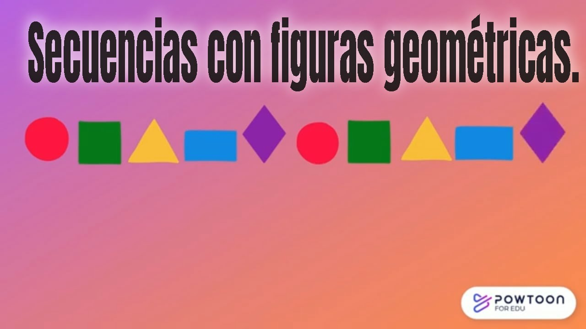
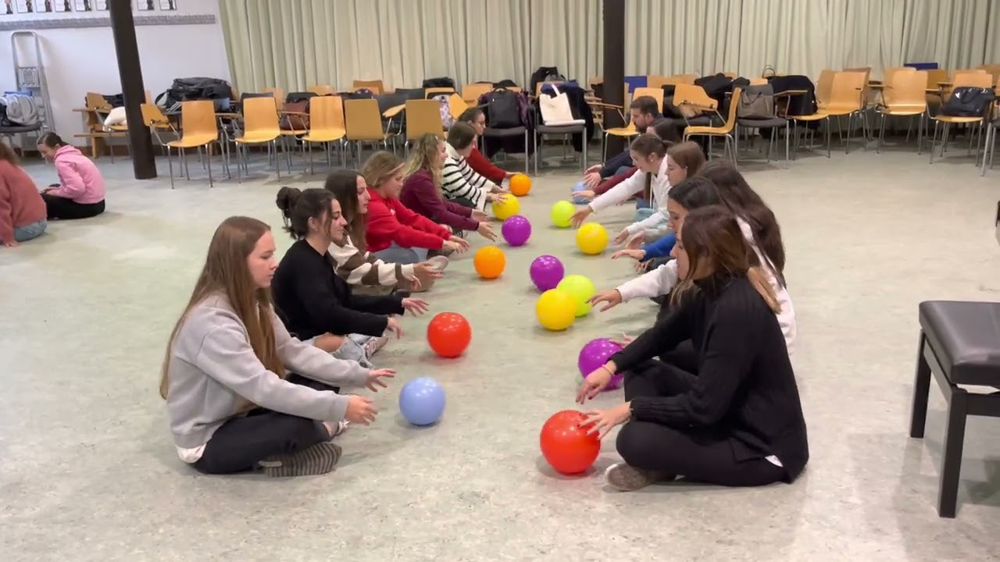
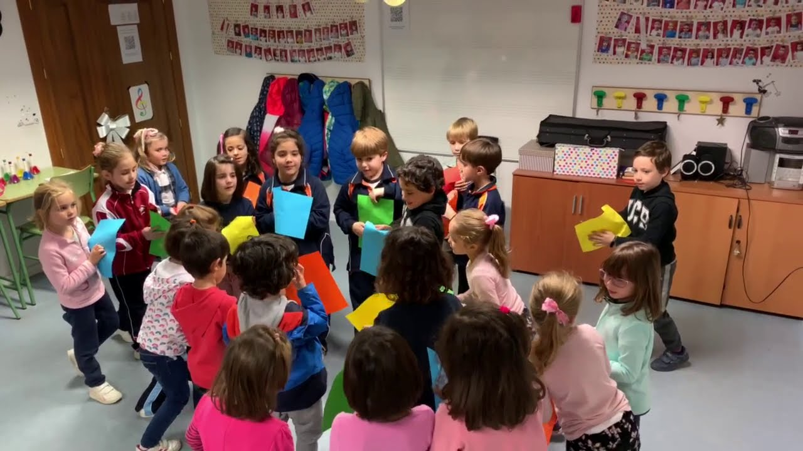
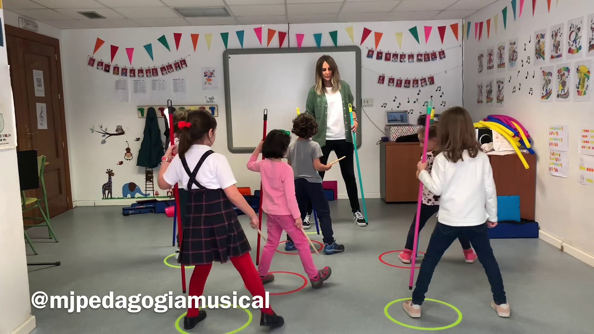

Área Emocional
El Arte de Gestionar Emociones
En este sentido, las competencias emocionales pueden definirse como el conjunto de saberes, destrezas y actitudes que permiten reconocer, comprender, expresar y gestionar adecuadamente las propias emociones y las de los demás (Bisquerra y García, 2018). Estas competencias se pueden estructurar y desarrollar para cultivarlas según el proceso del estudiante.
Según Bisquerra y García (2018), las cinco competencias emocionales se desarrollan progresivamente a lo largo de la vida, integrándose en la personalidad del estudiante con el apoyo de la familia y la escuela, combinando crecimiento individual y acompañamiento afectivo, social y educativo.
Vínculos afectivos y estrategias lúdicas en la educación
Según Pérez López y Gómez Hurtado (2021), la formación emocional de los docentes favorece la construcción de vínculos afectivos con los estudiantes, permite abordar los problemas de manera efectiva y contribuye a generar ambientes educativos adecuados. Con ello, Pérez enfatiza que una de las herramientas para explorar la emoción de los estudiantes es crear espacios de recreación, cultivando un ambiente familiar mediante diversos juegos en forma de rally.
Creación de figuras con círculos
Desarrollo Emocional
Grado: 1.º grado de primaria
Objetivo: Fomentar la expresión creativa a través de figuras.
Motivación: El docente entregará a cada estudiante 36 círculos de colores para crear una figura libre que represente una emoción, un objeto o una idea personal. Cada alumna usará los círculos para crear su figura y luego podrá compartir su significado con el grupo, fomentando la expresión y el reconocimiento emocional.
Secuencias con figuras geométricas
Desarrollo Emocional
Grado: 1.º de primaria
Objetivo: Fortalecer la concentración mediante seriaciones con tangram.
Motivación: Cada estudiante cuenta con un bote de tangram. La maestra irá indicando las figuras de seriación a realizar (de lo más simple a lo más complejo). Al finalizar cada figura, se invitará a los niños a expresar cómo se sintieron: felices, tranquilos, frustrados u orgullosos.
Pelotas de colores
Desarrollo Emocional
Grado: 1.º a 3.º de primaria
Objetivo: Fomentar la expresión emocional a través de la música y el ritmo.
Motivación: Se explica al grupo que la música y el ritmo son herramientas poderosas para expresar emociones y fortalecer la conexión entre los miembros. A través de esta dinámica, los estudiantes podrán disfrutar, compartir y canalizar sus emociones de manera positiva mientras aprenden a coordinarse con los demás.
CLAP CLAP SONG
Desarrollo Emocional
Grado: 1.º a 3.º de primaria
Objetivo: Desarrollar coordinación y trabajo en equipo mediante actividades rítmicas.
Motivación: Se presenta al grupo que la música y el movimiento son herramientas poderosas para expresar emociones y fortalecer la conexión entre los miembros. A través de esta dinámica, los estudiantes apreciarán cómo la sincronización y la colaboración pueden generar un ambiente positivo y emocionalmente enriquecedor.
Música y movimiento
Desarrollo Emocional
Grado: 1.º a 3.º de primaria
Objetivo: Desarrollar coordinación y trabajo en equipo mediante actividades rítmicas.
Motivación: Se presenta al grupo que la música y el movimiento son herramientas poderosas para expresar emociones y fortalecer la conexión entre los miembros. A través de esta dinámica, los estudiantes apreciarán cómo la sincronización y la colaboración pueden generar un ambiente positivo y emocionalmente enriquecedor.
